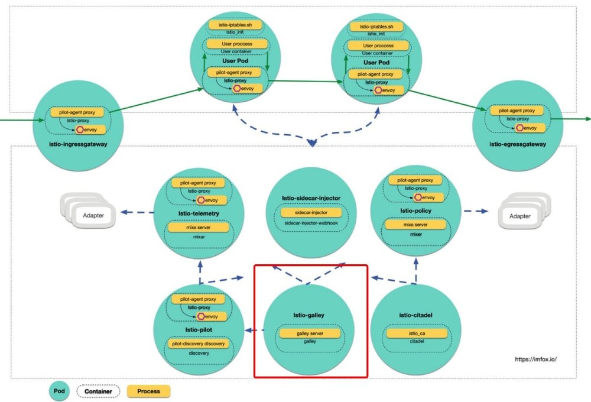
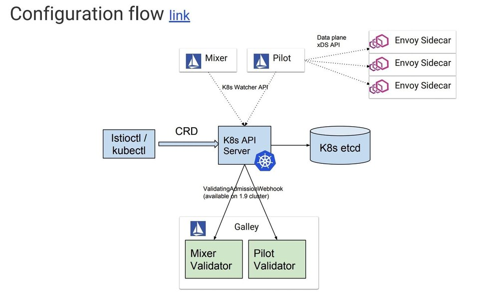
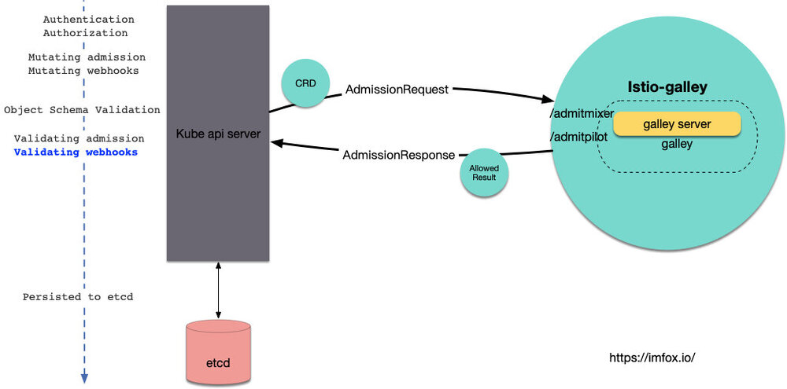
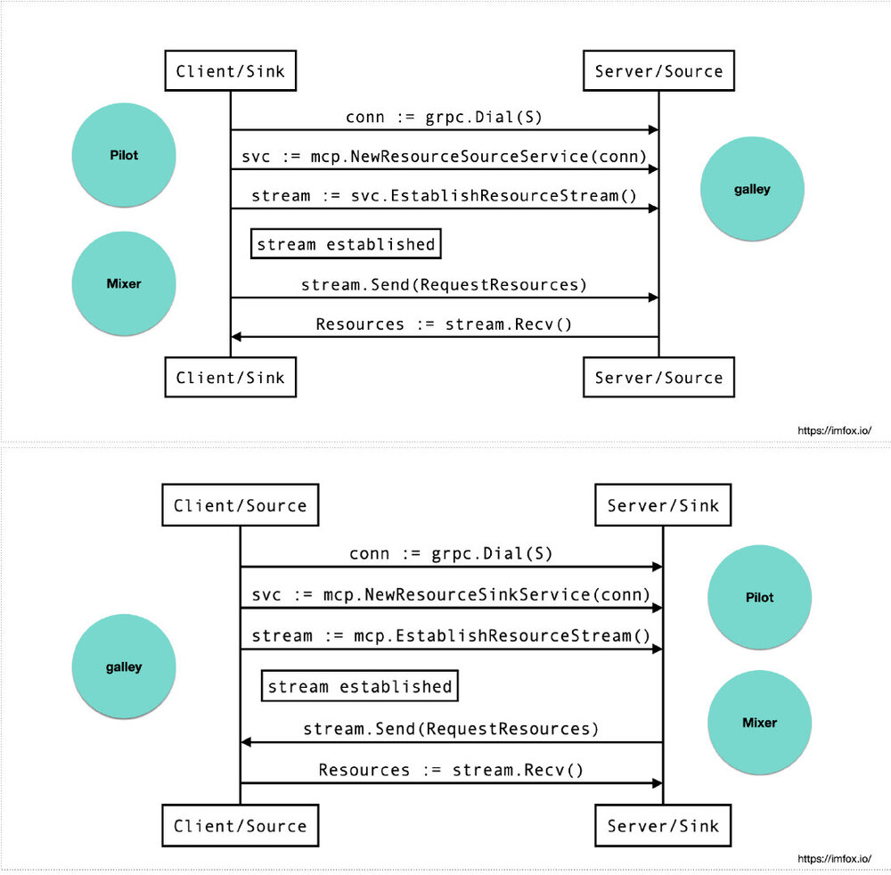
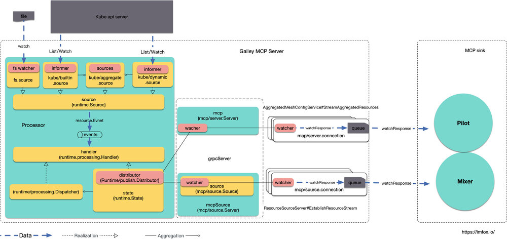
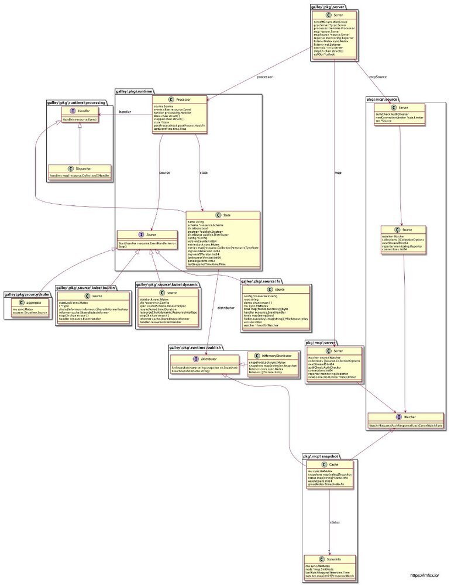

作者: 钟华，腾讯云容器产品中心高级工程师，热衷于容器、微服务、service mesh、istio、devops 等领域技术。
今天我们来解析istio控制面组件Galley。Galley Pod是一个单容器单进程组件, 没有sidecar, 结构独立，职责明确。

{kind=link}
前不久istio 1.1 版本正式发布, 其中istio的配置管理机制有较大的改进, 以下是1.1 release note 中部分说明:
Added Galley as the primary configuration ingestion and distribution mechanism within Istio. It provides a robust model to validate, transform, and distribute configuration states to Istio components insulating the Istio components from Kubernetes details. Galley uses the Mesh Configuration Protocol (MCP) to interact with components
Galley 原来仅负责进行配置验证, 1.1 后升级为整个控制面的配置管理中心, 除了继续提供配置验证功能外, Galley还负责配置的管理和分发, Galley 使用 网格配置协议(Mesh Configuration Protocol) 和其他组件进行配置的交互.
今天对Galley的剖析大概有以下方面:
- Galley 演进的背景
- Galley 配置验证功能
- MCP 协议
- Galley 配置管理实现浅析
Galley 演进的背景
在 k8s 场景下, 「配置(Configuration)」一词主要指yaml编写的Resource Definition, 如service、pod, 以及扩展的CRD( Custom Resource Definition), 如 istio的 VirtualService、DestinationRule 等.
本文中「配置」一词可以等同于 k8s Resource Definition + istio CRD
声明式 API 是 Kubernetes 项目编排能力“赖以生存”的核心所在, 而「配置」是声明式 API的承载方式.
Istio 项目的设计与实现，其实都依托于 Kubernetes 的声明式 API 和它所提供的各种编排能力。可以说，Istio 是在 Kubernetes 项目使用上的一位“集大成者”
Istio 项目有多火热，就说明 Kubernetes 这套“声明式 API”有多成功
k8s 内置了几十个Resources, istio 创造了50多个CRD, 其复杂度可见一斑, 所以有人说面向k8s编程近似于面向yaml编程.
早期的Galley 仅仅负责对「配置」进行运行时验证, istio 控制面各个组件各自去list/watch 各自关注的「配置」, 以下是istio早期的Configuration flow:

越来越多且复杂的「配置」给istio 用户带来了诸多不便, 主要体现在:
- 「配置」的缺乏统一管理, 组件各自订阅, 缺乏统一回滚机制, 配置问题难以定位
- 「配置」可复用度低, 比如在1.1之前, 每个mixer adpater 就需要定义个新的CRD.
- 另外「配置」的隔离, ACL 控制, 一致性, 抽象程度, 序列化等等问题都还不太令人满意.
随着istio功能的演进, 可预见的istio CRD数量还会继续增加, 社区计划将Galley 强化为istio 「配置」控制层, Galley 除了继续提供「配置」验证功能外, 还将提供配置管理流水线, 包括输入, 转换, 分发, 以及适合istio控制面的「配置」分发协议(MCP).
本文对Galley的分析基于istio tag 1.1.1 (commit 2b13318)
Galley 配置验证功能
在istio 庖丁解牛(二) sidecar injector中我分析了istio-sidecar-injector 如何利用 MutatingWebhook 来实现sidecar注入, Galley 使用了k8s提供的另一个Admission Webhooks: ValidatingWebhook, 来做配置的验证:

istio 需要一个关于ValidatingWebhook的配置项, 用于告诉k8s api server, 哪些CRD应该发往哪个服务的哪个接口去做验证, 该配置名为istio-galley, 简化的内容如下:
%kubectl get ValidatingWebhookConfiguration istio-galley -oyaml
apiVersion: admissionregistration.k8s.io/v1beta1
kind: ValidatingWebhookConfiguration
metadata:
name: istio-galley
webhooks:
- clientConfig:
......
service:
name: istio-galley
namespace: istio-system
path: /admitpilot
failurePolicy: Fail
name: pilot.validation.istio.io
rules:
...pilot关注的CRD...
- gateways
- virtualservices
......
- clientConfig:
......
service:
name: istio-galley
namespace: istio-system
path: /admitmixer
name: mixer.validation.istio.io
rules:
...mixer关注的CRD...
- rules
- metrics
......
可以看到, 该配置将pilot和mixer关注的CRD, 分别发到了服务istio-galley的/admitpilot和/admitmixer, 在Galley 源码中可以很容易找到这2个path Handler的入口:
h.HandleFunc("/admitpilot", wh.serveAdmitPilot)
h.HandleFunc("/admitmixer", wh.serveAdmitMixer)
MCP协议
MCP 提供了一套配置订阅和分发的API, 在MCP中, 可以抽象为以下模型:
- source: 「配置」的提供端, 在Istio中Galley 即是source
- sink: 「配置」的消费端, 在istio中典型的sink包括Pilot和Mixer组件
- resource: source和sink关注的资源体, 也就是istio中的「配置」
当sink和source之间建立了对某些resource的订阅和分发关系后, source 会将指定resource的变化信息推送给sink, sink端可以选择接受或者不接受resource更新(比如格式错误的情况), 并对应返回ACK/NACK 给source端.
MCP 提供了gRPC 的实现, 实现代码参见: https://github.com/istio/api/tree/master/mcp/v1alpha1,
其中包括2个services: ResourceSource 和 ResourceSink, 通常情况下, source 会作为 gRPC的server 端, 提供ResourceSource服务, sink 作为 gRPC的客户端, sink主动发起请求连接source; 不过有的场景下, source 会作为gRPC的client端, sink作为gRPC的server端提供ResourceSink服务, source主动发起请求连接sink.
以上2个服务, 内部功能逻辑都是一致的, 都是sink需要订阅source管理的resource, 区别仅仅是哪端主动发起的连接请求.
具体到istio的场景中:
- 在单k8s集群的istio mesh中, Galley默认实现了
ResourceSourceservice, Pilot和Mixer会作为该service的client主动连接Galley进行配置订阅. - Galley 可以配置去主动连接远程的其他sink, 比如说在多k8s集群的mesh中, 主集群中的Galley可以为多个集群的Pilot/Mixer提供配置管理, 跨集群的Pilot/Mixer无法主动连接主集群Galley, 这时候Galley就可以作为gRPC的client 主动发起连接, 跨集群的Pilot/Mixer作为gRPC server 实现
ResourceSink服务,
两种模式的示意图如下:

Galley 配置管理实现浅析
galley 进程对外暴露了若干服务, 最重要的就是基于gRPC的mcp服务, 以及http的验证服务, 除此之外还提供了 prometheus exporter接口以及Profiling接口:
if serverArgs.EnableServer { // 配置管理服务
go server.RunServer(serverArgs, livenessProbeController, readinessProbeController)
}
if validationArgs.EnableValidation { // 验证服务
go validation.RunValidation(validationArgs, kubeConfig, livenessProbeController, readinessProbeController)
}
// 提供 prometheus exporter
go server.StartSelfMonitoring(galleyStop, monitoringPort)
if enableProfiling {
// 使用包net/http/pprof
// 通过http server提供runtime profiling数据
go server.StartProfiling(galleyStop, pprofPort)
}
// 开始探针更新
go server.StartProbeCheck(livenessProbeController, readinessProbeController, galleyStop)
接下来主要分析下「配置」管理服务的实现:
go server.RunServer(serverArgs, livenessProbeController, readinessProbeController)
下面是Galley 配置服务结构示意图:

{kind=link}
从上图可以看到, Galley 配置服务主要包括 Processor 和 负责mcp通信的grpc Server.
其中 Processor 又由以下部分组成:
- Source: 代表Galley管理的配置的来源
- Handler: 对「配置」事件的处理器
- State: Galley管理的「配置」在内存中状态
Source
interface Source 代表istio关注的配置的来源, 其Start方法需要实现对特定资源的变化监听.
// Source to be implemented by a source configuration provider.
type Source interface {
// Start the source interface, provided the EventHandler. The initial state of the underlying
// config store should be reflected as a series of Added events, followed by a FullSync event.
Start(handler resource.EventHandler) error
// Stop the source interface. Upon return from this method, the channel should not be accumulating any
// more events.
Stop()
}
在Galley中, 有多个Source的实现, 主要包括
source/fs.sourcesource/kube/builtin.sourcesource/kube/dynamic.sourcesource/kube.aggregate
其中source/fs代表从文件系统中获取配置, 这种形式常用于开发和测试过程中, 不需要创建实际的k8s CRD, 只需要CRD文件即可, 同时source/fs也是实现了更新watch(使用https://github.com/howeyc/fsnotify)
source/kube/builtin.source处理k8s 内置的配置来源, 包括Service, Node, Pod, Endpoints等, source/kube/dynamic.source处理其他的istio 关注的CRD, source/kube.aggregate是多个Source 的聚合, 其本身也实现了Source interface:
type aggregate struct {
mu sync.Mutex
sources []runtime.Source
}
func (s *aggregate) Start(handler resource.EventHandler) error {
......
for _, source := range s.sources {
if err := source.Start(syncHandler); err != nil {
return err
}
}
......
source/kube/builtin.source、source/kube/dynamic.source本身都包含一个k8s SharedIndexInformer:
// source is a simplified client interface for listening/getting Kubernetes resources in an unstructured way.
type source struct {
......
// SharedIndexInformer for watching/caching resources
informer cache.SharedIndexInformer
handler resource.EventHandler
}
二者的Start方法的实现, 正是用到了k8s典型的 Informer+list/watch 模式, 获取关注「配置」的变化事件, 在此不再赘述.
Source 获得「配置」更新事件后, 会将其推送到Processor 的events chan 中, events 长度为1024, 通过go p.process(), Proccesor的handler会对事件进行异步处理.
func (p *Processor) Start() error {
......
events := make(chan resource.Event, 1024)
err := p.source.Start(func(e resource.Event) {
events <- e
})
......
p.events = events
go p.process()
return nil
}
func (p *Processor) process() {
loop:
for {
select {
// Incoming events are received through p.events
case e := <-p.events:
p.processEvent(e)
case <-p.state.strategy.Publish:
scope.Debug("Processor.process: publish")
p.state.publish()
// p.done signals the graceful Shutdown of the processor.
case <-p.done:
scope.Debug("Processor.process: done")
break loop
}
if p.postProcessHook != nil {
p.postProcessHook()
}
}
......
}
Handler 和 State
interface Handler 代表对「配置」变化事件的处理器:
// Handler handles an incoming resource event.
type Handler interface {
Handle(e resource.Event)
}
在istio中有多个Handler的实现, 典型的有:
- Dispatcher
- State
Dispatcher 是多个Handler的集合:
type Dispatcher struct {
handlers map[resource.Collection][]Handler
}
State 是对Galley的内存中的状态, 包括了Galley 当前持有「配置」的schema、发布策略以及内容快照等:
// State is the in-memory state of Galley.
type State struct {
name string
schema *resource.Schema
distribute bool
strategy *publish.Strategy
distributor publish.Distributor
config *Config
// version counter is a nonce that generates unique ids for each updated view of State.
versionCounter int64
// entries for per-message-type State.
entriesLock sync.Mutex
entries map[resource.Collection]*resourceTypeState
// Virtual version numbers for Gateways & VirtualServices for Ingress projected ones
ingressGWVersion int64
ingressVSVersion int64
lastIngressVersion int64
// pendingEvents counts the number of events awaiting publishing.
pendingEvents int64
// lastSnapshotTime records the last time a snapshot was published.
lastSnapshotTime time.Time
}
同时State 也实现了interface Handler, 最终「配置」资源将会作为快照存储到State的distributor中, distributor实际的实现是mcp包中的Cache, 实际会调用mcp中的Cache#SetSnapshot.
Distributor 、Watcher 和 Cache
在mcp包中, 有2个interface 值得特别关注: Distributor 和 Watcher
interface Distributor 定义了「配置」快照存储需要实现的接口, State 最终会调用SetSnapshot将配置存储到快照中.
// Distributor interface allows processor to distribute snapshots of configuration.
type Distributor interface {
SetSnapshot(name string, snapshot sn.Snapshot)
ClearSnapshot(name string)
}
interface Watcher 功能有点类似k8s的 list/watch, Watch方法会注册 mcp sink 的watch 请求和处理函数:
// Watcher requests watches for configuration resources by node, last
// applied version, and type. The watch should send the responses when
// they are ready. The watch can be canceled by the consumer.
type Watcher interface {
// Watch returns a new open watch for a non-empty request.
//
// Cancel is an optional function to release resources in the
// producer. It can be called idempotently to cancel and release resources.
Watch(*Request, PushResponseFunc) CancelWatchFunc
}
struct mcp/snapshot.Cache 同时实现了Distributor 和 Watcher interface:
type Cache struct {
mu sync.RWMutex
snapshots map[string]Snapshot
status map[string]*StatusInfo
watchCount int64
groupIndex GroupIndexFn
}
mcp 服务端在接口 StreamAggregatedResources和EstablishResourceStream中, 会调用Watch方法, 注册sink连接的watch请求:
sr := &source.Request{
SinkNode: req.SinkNode,
Collection: collection,
VersionInfo: req.VersionInfo,
}
w.cancel = con.watcher.Watch(sr, con.queueResponse)
mcp/snapshot.Cache 实现了interface Distributor 的SetSnapshot方法, 该方法在State状态变化后会被调用, 该方法会遍历之前watch注册的responseWatch, 并将WatchResponse传递给各个处理方法.
// SetSnapshot updates a snapshot for a group.
func (c *Cache) SetSnapshot(group string, snapshot Snapshot) {
c.mu.Lock()
defer c.mu.Unlock()
// update the existing entry
c.snapshots[group] = snapshot
// trigger existing watches for which version changed
if info, ok := c.status[group]; ok {
info.mu.Lock()
defer info.mu.Unlock()
for id, watch := range info.watches {
version := snapshot.Version(watch.request.Collection)
if version != watch.request.VersionInfo {
scope.Infof("SetSnapshot(): respond to watch %d for %v @ version %q",
id, watch.request.Collection, version)
response := &source.WatchResponse{
Collection: watch.request.Collection,
Version: version,
Resources: snapshot.Resources(watch.request.Collection),
Request: watch.request,
}
watch.pushResponse(response)
// discard the responseWatch
delete(info.watches, id)
scope.Debugf("SetSnapshot(): watch %d for %v @ version %q complete",
id, watch.request.Collection, version)
}
}
}
}
提供给Watch的处理函数queueResponse会将WatchResponse放入连接的响应队列, 最终会推送给mcp sink端.
// Queue the response for sending in the dispatch loop. The caller may provide
// a nil response to indicate that the watch should be closed.
func (con *connection) queueResponse(resp *WatchResponse) {
if resp == nil {
con.queue.Close()
} else {
con.queue.Enqueue(resp.Collection, resp)
}
}
最后上一张Galley mcp 服务相关模型UML:

{kind=link}
Galley 源代码展示了面向抽象(interface)编程的好处, Source 是对「配置」数据源的抽象, Distributor 是「配置」快照存储的抽象, Watcher 是对「配置」订阅端的抽象. 抽象的具体实现可以组合起来使用. 另外Galley组件之间也充分解耦, 组件之间的数据通过chan/watcher等流转.
关于早期 istio 配置管理的演进计划, 可以参考2018年5月 CNCF KubeCon talk Introduction to Istio Configuration - Joy Zhang (需.翻.墙), 1.1 版本中Galley 也还未完全实现该文中的roadmap, 如 configuration pipeline 等. 未来Galley 还会继续演进.